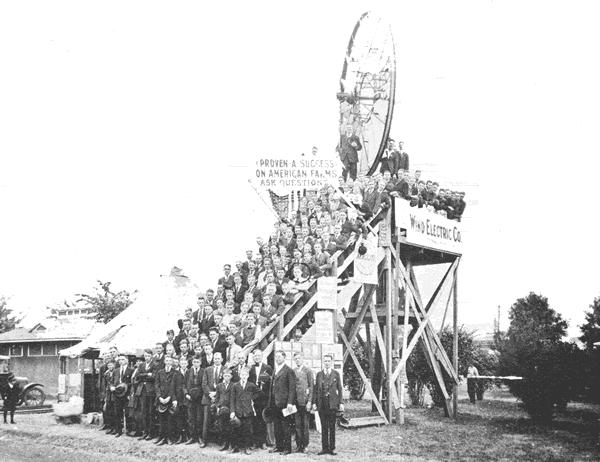

Alternative energy freaks-enthusiastic tinkerers and mechanical visionaries that they are-sometimes get so caught up developing "the power sources of the future" that they tend to forget the significant contributions our granddads made to "the cause" decades ago. Witness, for example, the wind generator you see here, photographed at a Minnesota state fair somewhere between 1918 and 1921.
At first glance, the device might seem to be nothing more than a kind of ghost of wind plants past but look again. If you've been keeping up to date on "recent" developments in the field, you'll notice there's a striking similarity (to put it mildly) between this "old-fashioned" machine and the "modern" ones now being touted by some inventors as "revolutionary bike wheel design wind generators". This particular "revolution", it would seem, was already won over half a century ago.
No, we're not suggesting that today's versions of the idea are not better designed, better built, or more efficient (they undoubtedly are) or that the good people now laboring night and day to bring us truly viable energy alternatives are doing anything less than extremely important, much-needed work.
What we are saying, though, is that grandpap should be given credit where credit is due. He and his cohorts, after all, were much the same as today's inventors: They had some good ideas-ones that we'd do well to resurrect today-and they had some that were well (ahem), perhaps best left to die a natural death. Take, for instance, the other gizmo in this photo, located over in the lower left-hand corner.
What you see there is a device that should strike terror in the hearts of ex-infants everywhere: an automatic, super deluxe, belt-driven baby cradle rocker!
My thanks to William G. Cassel of Lake Crystal, Minnesota for loaning me this old photo (which he found in a trunk that once belonged to his grandfather).-MOTHER. -.
|
 |
|
|